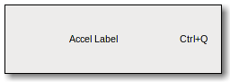

| Top |
GtkAccelLabelGtkAccelLabel — A label which displays an accelerator key on the right of the text |
 |
Functions
| GtkWidget * | gtk_accel_label_new () |
| void | gtk_accel_label_set_accel_closure () |
| GtkWidget * | gtk_accel_label_get_accel_widget () |
| void | gtk_accel_label_set_accel_widget () |
| guint | gtk_accel_label_get_accel_width () |
| gboolean | gtk_accel_label_refetch () |
Object Hierarchy
GObject
╰── GInitiallyUnowned
╰── GtkObject
╰── GtkWidget
╰── GtkMisc
╰── GtkLabel
╰── GtkAccelLabel
Description
The GtkAccelLabel widget is a subclass of GtkLabel that also displays an accelerator key on the right of the label text, e.g. 'Ctl+S'. It is commonly used in menus to show the keyboard short-cuts for commands.
The accelerator key to display is not set explicitly.
Instead, the GtkAccelLabel displays the accelerators which have been added to
a particular widget. This widget is set by calling
gtk_accel_label_set_accel_widget().
For example, a GtkMenuItem widget may have an accelerator added to emit the
"activate" signal when the 'Ctl+S' key combination is pressed.
A GtkAccelLabel is created and added to the GtkMenuItem, and
gtk_accel_label_set_accel_widget() is called with the GtkMenuItem as the
second argument. The GtkAccelLabel will now display 'Ctl+S' after its label.
Note that creating a GtkMenuItem with gtk_menu_item_new_with_label() (or
one of the similar functions for GtkCheckMenuItem and GtkRadioMenuItem)
automatically adds a GtkAccelLabel to the GtkMenuItem and calls
gtk_accel_label_set_accel_widget() to set it up for you.
A GtkAccelLabel will only display accelerators which have GTK_ACCEL_VISIBLE
set (see GtkAccelFlags).
A GtkAccelLabel can display multiple accelerators and even signal names,
though it is almost always used to display just one accelerator key.
Example 4. Creating a simple menu item with an accelerator key.
1 2 3 4 5 6 7 8 9 10 11 12 13 14 15 16 17 18 |
GtkWidget *save_item; GtkAccelGroup *accel_group; /* Create a GtkAccelGroup and add it to the window. */ accel_group = gtk_accel_group_new (); gtk_window_add_accel_group (GTK_WINDOW (window), accel_group); /* Create the menu item using the convenience function. */ save_item = gtk_menu_item_new_with_label ("Save"); gtk_widget_show (save_item); gtk_container_add (GTK_CONTAINER (menu), save_item); /* Now add the accelerator to the GtkMenuItem. Note that since we called gtk_menu_item_new_with_label() to create the GtkMenuItem the GtkAccelLabel is automatically set up to display the GtkMenuItem accelerators. We just need to make sure we use GTK_ACCEL_VISIBLE here. */ gtk_widget_add_accelerator (save_item, "activate", accel_group, GDK_s, GDK_CONTROL_MASK, GTK_ACCEL_VISIBLE); |
Functions
gtk_accel_label_new ()
GtkWidget *
gtk_accel_label_new (const gchar *string);
Creates a new GtkAccelLabel.
gtk_accel_label_set_accel_closure ()
void gtk_accel_label_set_accel_closure (GtkAccelLabel *accel_label,GClosure *accel_closure);
Sets the closure to be monitored by this accelerator label. The closure
must be connected to an accelerator group; see gtk_accel_group_connect().
gtk_accel_label_get_accel_widget ()
GtkWidget *
gtk_accel_label_get_accel_widget (GtkAccelLabel *accel_label);
Fetches the widget monitored by this accelerator label. See
gtk_accel_label_set_accel_widget().
gtk_accel_label_set_accel_widget ()
void gtk_accel_label_set_accel_widget (GtkAccelLabel *accel_label,GtkWidget *accel_widget);
Sets the widget to be monitored by this accelerator label.
gtk_accel_label_get_accel_width ()
guint
gtk_accel_label_get_accel_width (GtkAccelLabel *accel_label);
Returns the width needed to display the accelerator key(s). This is used by menus to align all of the GtkMenuItem widgets, and shouldn't be needed by applications.
gtk_accel_label_refetch ()
gboolean
gtk_accel_label_refetch (GtkAccelLabel *accel_label);
Recreates the string representing the accelerator keys. This should not be needed since the string is automatically updated whenever accelerators are added or removed from the associated widget.
Types and Values
struct GtkAccelLabel
struct GtkAccelLabel;
The GtkAccelLabel struct contains private data only, and should be accessed using the functions below.
Property Details
The “accel-closure” property
“accel-closure” GClosure *
The closure to be monitored for accelerator changes.
Owner: GtkAccelLabel
Flags: Read / Write
The “accel-widget” property
“accel-widget” GtkWidget *
The widget to be monitored for accelerator changes.
Owner: GtkAccelLabel
Flags: Read / Write